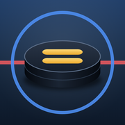

Remízy
Pridaj si appku na plochu iPhonu:
- Dole v Safari ťukni na Zdieľať (štvorček so šípkou).
- Vyber Pridať na plochu a potvrď Pridať.
- Na ploche ťukni na ikonu Remízy – otvorí sa rovno appka.

Pridaj si appku na plochu iPhonu: